물류관리사-2교시 (2017-07-01 기출문제)
1과목: 보관하역론
1. 보관의 기능이 아닌 것은?
- 생산과 소비의 시간적 거리 조정
- 운반 활성화 지수의 최소화
- 제품의 집산, 분류, 조합
- 세금 지불 연기 등의 금융 역할
- 구매와 생산의 완충
(정답률: 55%)

2. 보관의 원칙에 관한 설명으로 옳지 않은 것을 모두 고른 것은?
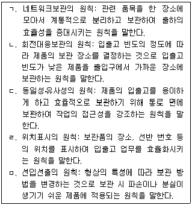
- ㄱ, ㄴ, ㄹ
- ㄱ, ㄴ, ㅁ
- ㄱ, ㄷ, ㄹ
- ㄴ, ㄷ, ㅁ
- ㄴ, ㄹ, ㅁ
(정답률: 57%)
3. 다음의 설명에 해당되는 물류시설은?
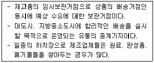
- 데포(Depot)
- 물류센터
- 복합화물터미널
- 스톡 포인트(Stock Point)
- CFS(Container Freight Station)
(정답률: 50%)
4. 내륙 컨테이너기지(ICD; Inland Container Depot)에 관한 내용으로 옳은 것을 모두 고른 것은?
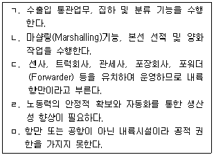
- ㄱ, ㄴ, ㄹ
- ㄱ, ㄴ, ㅁ
- ㄱ, ㄷ, ㄹ
- ㄴ, ㄷ, ㅁ
- ㄴ, ㄹ, ㅁ
(정답률: 65%)
5. 다음은 작년 K사 물류거점시설의 제품별 주요 물류비 배분 내역이며 총 물류비는 50,000천원이었다. 제품 C의 물류비는?
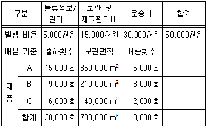
- 10,000천원
- 13,500천원
- 15,000천원
- 20,000천원
- 25,000천원
(정답률: 62%)
6. 크로스도킹(Cross Docking)에 관한 내용으로 옳은 것을 모두 고른 것은?
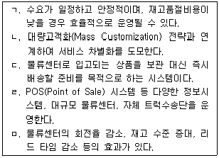
- ㄱ, ㄴ, ㄹ
- ㄱ, ㄴ, ㅁ
- ㄱ, ㄷ, ㄹ
- ㄴ, ㄷ, ㅁ
- ㄴ, ㄹ, ㅁ
(정답률: 67%)
7. 일반적인 물류센터의 작업 공정 순서는?
- 입하 → 피킹 → 검품 → 보관 → 격납 → 포장 → 출하
- 입하 → 피킹 → 보관 → 격납 → 검품 → 포장 → 출하
- 입하 → 격납 → 보관 → 피킹 → 검품 → 포장 → 출하
- 입하 → 격납 → 포장 → 보관 → 피킹 → 검품 → 출하
- 입하 → 포장 → 격납 → 보관 → 피킹 → 검품 → 출하
(정답률: 50%)
8. 물류센터의 설계 특성별 고려사항으로 옳은 것을 모두 고른 것은?
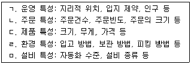
- ㄱ, ㄴ, ㄹ
- ㄱ, ㄴ, ㅁ
- ㄱ, ㄷ, ㄹ
- ㄴ, ㄷ, ㅁ
- ㄴ, ㄹ, ㅁ
(정답률: 63%)
9. 물류단지의 입지결정 방법에 관한 설명으로 옳지 않은 것은?
- 총비용 비교법: 각 대안별로 관리비용을 산출하고, 총비용이 최소가 되는 대안을 선택하는 방법이다.
- 무게중심법: 물류센터를 기준으로 고정된 공급지(공장 등)에서 물류센터까지의 수송비와 물류센터에서 수요지(배송처 등)까지의 수송비를 구하여 그 합이 최소가 되는 입지를 선택하는 방법이다.
- 톤-킬로법: 입지에 관련된 요인(접근성, 지역환경, 노동력 등)에 주관적으로 가중치를 설정하여 각 요인의 평가점수를 합산하는 방법이다.
- 브라운깁슨법: 입지에 영향을 주는 인자들을 필수적 요인, 객관적 요인, 주관적 요인으로 구분하여 평가하는 방법이다.
- 손익분기 도표법: 일정한 물동량(입고량 또는 출고량)의 고정비와 변동비를 산출하고 그 합을 비교하여 물동량에 따른 총비용이 최소가 되는 대안을 선택하는 방법이다.
(정답률: 58%)
10. 수ㆍ배송 네트워크에서 물류 거점(Node)수의 증가로 나타나는 현상이 아닌 것은?
- 재고비용은 증가한다.
- 배송리드타임은 증가한다.
- 시설투자비용은 증가한다.
- 관리비용은 증가한다.
- 총비용은 낮아지다가 일정 수 이상이 넘으면 점차 증가한다.
(정답률: 54%)
11. K사 단일명령수행 자동창고시스템에서는 시간당 180건의 주문을 처리한다. S/R(Storage and Retrieval)기계의 운행당 평균주기시간은 1분이며 한 개의 통로만 담당하고, 각 통로는 2개의 랙을 가진다. 자동창고의 저장용량이 6,000단위이고, 랙의 단(Tier) 수가 20일 때 저장 랙의 베이(Bay) 수는?
- 15
- 25
- 35
- 50
- 100
(정답률: 32%)
12. 공급사슬 협업에 있는 A사, B사, C사가 있다. 100단위의 완성품을 C사가 도매상에게 공급하기 위해 A사가 B사에 공급해야 할 단위수량은? (단, B사와 C사는 각각 3%, 5%의 손실률을 가진다.)
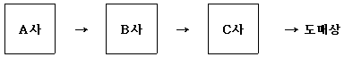
- 106개
- 110개
- 116개
- 118개
- 120개
(정답률: 56%)
13. 자동창고시스템이 시간당 300번의 저장 및 출고 작업을 수행할 수 있다. 10개의 통로와 각 통로에는 한 대씩의 S/R(Storage and Retrieval)기계가 작업을 수행한다. 수행작업 40%는 단일명령에 의해서 수행되며 나머지는 이중명령에 의해서 수행된다. S/R기계의 평균 이용률은? (단, 단일명령수행 주기시간: 2분, 이중명령수행 주기시간: 3분)
- 65%
- 82.5%
- 85%
- 90%
- 95%
(정답률: 35%)
14. 스태커 크레인(Stacker Crane)에 적합한 오더피킹(Order Picking)의 출고형태(보관단위-피킹단위)는?
- 파렛트-파렛트
- 파렛트-케이스
- 케이스-케이스
- 케이스-단품
- 단품-단품
(정답률: 55%)
15. 자동창고시스템에 관한 설명으로 옳지 않은 것은?
- 컴퓨터 제어방식을 통해 작업의 효율성 향상 효과를 얻을 수 있다.
- 재고관리 및 선입선출에 의한 입출고 관리가 용이하다.
- 보관능력 및 유연성 측면에서 효율성을 향상시킨다.
- 자동창고에서 처리할 물품의 치수와 포장, 중량 등을 고려하여 설계한다.
- 다양한 규격의 화물을 취급하는 영업용 창고에 적합하다.
(정답률: 62%)
16. 창고관리시스템(WMS; Warehouse Management System)의 특성에 관한 설명으로 옳지 않은 것은?
- 물품의 입하, 격납, 피킹, 출하 및 재고사이클카운트의 창고활동을 효율적으로 관리하는 시스템이다.
- RFID, 바코드시스템 및 무선자동인식시스템을 통해 물품취급을 최소화한다.
- 재고정확도, 설비활용도, 고객서비스율이 향상된다.
- 피킹관리, 주문진척관리 및 자동발주시스템과 같은 주문관련 기능을 수행한다.
- 출고관리, 선입선출관리, 수ㆍ배송 관리, 크로스도킹과 같은 출고관련 기능을 수행한다.
(정답률: 31%)
17. 디지털 피킹시스템(DPS; Digital Picking System)과 디지털 어소팅시스템(DAS; Digital Assorting System)의 특성에 관한 설명으로 옳지 않은 것은?
- DPS는 피킹 물품을 전표 없이 피킹가능한 시스템으로 다품종 소량, 다빈도 피킹 및 분배작업에 사용된다.
- DPS는 대차식 DPS, 구동컨베이어 DPS, 자동컨베이어 DPS로 분류되며, 대차식 DPS의 초기 설치비가 가장 많이 소요된다.
- DAS는 적은 인원으로 빠른 분배작업이 가능하여 물류비용을 절감할 수 있다.
- 멀티 분배 DAS방식은 고객별 주문상품을 합포장하기에 적합한 분배시스템이다.
- 멀티 다품종분배 DAS방식은 아이템 수가 많은 의류업 품목에 적합한 시스템이다.
(정답률: 42%)
18. 집중구매 방식과 분산구매 방식에 관한 설명으로 옳지 않은 것은?
- 집중구매 방식은 구매절차를 표준화하여 구매비용 절감에 유리하다.
- 분산구매 방식은 구매절차가 간단하고 비교적 단기간 내 구매가 가능하다.
- 가격 차이가 없는 품목의 경우 집중구매가 유리하다.
- 집중구매 방식은 긴급조달의 어려움이 있다.
- 분산구매 방식은 사업장의 특수 요구사항을 반영하는 자율적인 구매가 가능하다.
(정답률: 56%)
19. JIT(Just In Time)에 관한 설명으로 옳지 않은 것은?
- 필요한 시간에, 필요한 장소에, 필요한 양만큼 공급하는 방식이다.
- 공급자는 제조업체의 필요한 자재 소요량을 신속하게 파악할 수 있어야 한다.
- 공급자와 생산자간 상호 협력이 미흡할 경우 성과를 기대하기 어렵다.
- 공급자는 안정적인 장기계약을 통해 제조기업의 한 공정처럼 협력할 수 있어야 한다.
- 수요예측을 기반으로 하는 Push 방식이 효과적이다.
(정답률: 69%)
20. 자재소요량계획(MRP; Material Requirement Planning)에서 A제품은 3개의 부품 X와 2개의 부품 Y로 구성되어 있으며 순소요량은 50개이다. 부품 X의 가용재고는 45개이며 입고예정량은 없으며, 부품 Y의 가용재고는 50개이며 15개의 입고예정량이 계획되어 있다면 부품 X, Y의 순소요량은?
- X= 1⑤개, Y= 35개
- X= 1⑤개, Y= 45개
- X= 1⑤개, Y= 1⑤개
- X= 150개, Y= 45개
- X= 150개, Y= 1⑤개
(정답률: 38%)
21. 시계열 예측기법은 수요를 평균(혹은 수평), 추세, 계절, 주기, 우연변동 등의 요소로 분해할 수 있다. 다음의 시계열 자료를 분해할 때, ㄱ~ㄹ에 적합한 내용을 순서대로 옳게 나열한 것은?
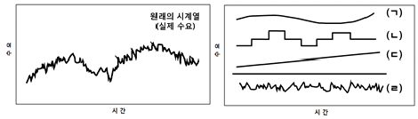
- 주기-계절적 패턴-추세-우연변동
- 추세-계절적 패턴-주기-우연변동
- 추세-우연변동-주기-계절적 패턴
- 주기-우연변동-추세-계절적 패턴
- 계절적 패턴-주기-추세-우연변동
(정답률: 63%)
22. 커피머신을 구매하여 공급하는 도매상은 올해의 구매전략으로 경제적 주문량(EOQ; Economic Order Quantity) 적용을 고려하고 있다. 연간 예상판매량을 10,000대, 대당 가격은 100만원, 대당 연간 재고유지에 소요되는 비용을 구매비용의 25%, 1회 발주에 소요되는 비용이 50만원이라고 할 때 경제적 주문량과 적정 주문횟수는?
- 100대, 100회
- 200대, 50회
- 200대, 100회
- 400대, 25회
- 400대, 50회
(정답률: 59%)
23. 다음은 K사의 월별 스마트폰 판매량을 나타낸 것이다. 4월의 수요를 예측한 값으로 옳은 것은? (단, 이동평균법의 경우 이동기간 n=3, 가중이동평균법의 경우 가중치는 최근기간으로부터 0.5, 0.3, 0.2 적용, 지수평활법의 경우 전월 예측치는 45만대였으며, 평활계수(α)는 0.8을 적용, 예측치는 소수점 둘째자리에서 반올림한다.)
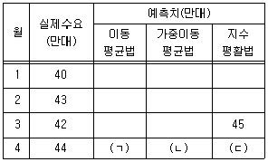
- ㄱ: 41.7, ㄴ: 41.9, ㄷ: 42.6
- ㄱ: 41.7, ㄴ: 43.2, ㄷ: 44.2
- ㄱ: 43.0, ㄴ: 43.2, ㄷ: 42.6
- ㄱ: 43.0, ㄴ: 41.9, ㄷ: 44.2
- ㄱ: 43.0, ㄴ: 43.2, ㄷ: 44.2
(정답률: 55%)
24. 재고의사결정과 관련된 비용 중 재고유지비용에 해당되는 항목의 개수는?
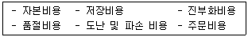
- 2개
- 3개
- 4개
- 5개
- 6개
(정답률: 38%)
25. K사는 제품 A를 판매하고 있으며 영업일은 200일, 연간 총수요량은 12,000개이다. 제품 A의 안전재고는 135개로 정하고, 공급사에 제품을 주문 시 4일 후에 창고에 입고될 경우 재주문점(ROP; Reorder Point)은?
- 60개
- 120개
- 240개
- 375개
- 4⑤개
(정답률: 48%)
26. 하역합리화 기본원칙 중 활성화의 원칙에서 활성지수가 '2'인 화물의 상태는? (단, 활성지수는 0∼4이다.)
- 컨베이어 위에 놓여 있는 상태
- 상자 속에 집어넣은 상태
- 개품이 바닥에 놓여 있는 상태
- 파렛트 및 스키드에 쌓은 상태
- 대차에 실어 놓은 상태
(정답률: 39%)
27. 다음이 설명하는 컨테이너 하역작업 용어는?
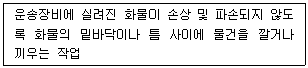
- 배닝(Vanning)
- 래싱(Lashing)
- 디배닝(Devanning)
- 더니징(Dunnaging)
- 스태킹(Stacking)
(정답률: 46%)
28. 보관장소에 따른 하역의 분류가 아닌 것은?
- 액체화물 하역
- 터미널 하역
- 항만 하역
- 창고 하역
- 배송센터 하역
(정답률: 68%)
29. 컨베이어의 장점으로 옳지 않은 것은?
- 좁은 장소에서 작업이 가능하다.
- 중력을 이용한 운반이 가능하다.
- 물품이 포장되어야 운반이 가능하다.
- 다른 기기와 연계하여 사용이 가능하다.
- 원격조정이나 자동제어가 가능하다.
(정답률: 61%)
30. 다음이 설명하는 하역장비는?
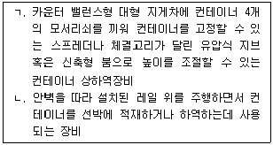
- ㄱ: 트랜스퍼 크레인(Transfer Crane), ㄴ: 리치스태커(Reach Stacker)
- ㄱ: 리치스태커(Reach Stacker), ㄴ: 컨테이너 크레인(Container Crane)
- ㄱ: 스트래들 캐리어(Straddle Carrier), ㄴ: 컨테이너 크레인(Container Crane)
- ㄱ: 리치스태커(Reach Stacker), ㄴ: 트랜스퍼 크레인(Transfer Crane)
- ㄱ: 스트래들 캐리어(Straddle Carrier), ㄴ: 트랜스퍼 크레인(Transfer Crane)
(정답률: 38%)
31. 랙(Rack)에 관한 설명으로 옳은 것은?
- 적층 랙(Mezzanine Rack): 소품종 대량 입출고될 수 있는 물품 보관에 적합하고 적재 공간을 지게차 통로로 활용하여 적재 효율은 높으나 선입후출(先入後出)해야 하는 단점이 있다.
- 모빌 랙(Mobile Rack): 레일을 이용하여 직선적으로 수평 이동되는 랙으로 통로를 대폭 절약할 수 있어 다품종 소량의 보관에 적합하다.
- 플로 랙(Flow Rack): 피킹시 피커를 고정하고 랙 자체가 회전하는 형태로 다품종 소량물품과 가벼운 물품에 많이 이용된다.
- 회전 랙(Carousel Rack): 외팔지주걸이 구조로 기본 프레임에 암(Arm)을 결착하여 물품을 보관하는 랙으로 파이프, 가구, 목재 등의 장척물 보관에 적합하다.
- 드라이브 인 랙(Drive-in Rack): 천정이 높은 창고에서 복층구조로 겹쳐 쌓는 방식으로 물품의 보관 효율과 공간 효용도가 높다.
(정답률: 58%)
32. 유닛로드 시스템(Unit Load System)의 장점에 관한 설명으로 옳지 않은 것은?
- 물류관리의 시스템화가 용이하여 하역과 수송의 일관화를 가능하게 한다.
- 대규모 자본투자가 필요 없고 유닛로드용의 자재를 관리하기가 쉬워진다.
- 수송 및 보관업무의 효율적인 운영과 수송포장의 간이화를 가능하게 한다.
- 하역작업의 혁신을 통해 수송합리화를 도모할 수 있다.
- 호환성이 증대되어 다른 회사와 공동으로 파렛트를 사용하는 등 시스템 연계성을 높일 수 있다.
(정답률: 67%)
33. T11 표준파렛트에 500mm×300mm×200mm 크기의 물품을 적재하려고 한다. 파렛트 적재방법을 핀휠(Pinwheel) 적재에서 블록(Block) 적재로 변경하면 파렛트의 바닥면적 적재율(또는 표면이용률)은 변경 전과 비교할 때 얼마나 변동하는가? (단, 적재 높이는 200mm를 유지해야 한다.)
- 25% 감소
- 50% 감소
- 10% 증가
- 25% 증가
- 50% 증가
(정답률: 26%)
34. 파렛트 풀 시스템(PPS; Pallet Pool System)에 관한 설명으로 옳지 않은 것은?
- 운영방식으로 TOFC(Trailer On Flat Car) 방식과 COFC(Container On Flat Car) 방식이 있다.
- 운송형태로 기업단위 PPS, 업계단위 PPS, 개방적 PPS가 있다.
- 전체적인 파렛트 수량이 줄어들어 사회자본이 줄고 물류기기, 시설의 규격화 및 표준화가 촉진된다.
- 표준화된 파렛트를 화주, 물류업자들이 공동으로 이용하는 제도로서 풀(Pool)조직이 파렛트에 대한 납품, 회수관리, 수리를 담당한다.
- 지역간 수급해결, 계절적 수요대응, 설비자금 절감을 위하여 필요한 시스템이다.
(정답률: 61%)
35. 다음의 분류시스템 방식은?
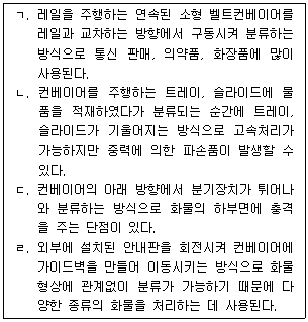
- ㄱ: 크로스벨트 방식(Cross-belt Type), ㄴ: 틸팅 방식(Tilting Type), ㄷ: 팝업 방식(Pop-up Type), ㄹ: 다이버터 방식(Diverter Type)
- ㄱ: 슬라이딩 슈 방식(Sliding Shoe Type), ㄴ: 틸팅 방식(Tilting Type), ㄷ: 팝업 방식(Pop-up Type), ㄹ: 크로스벨트 방식(Cross-belt Type)
- ㄱ: 크로스벨트 방식(Cross-belt Type), ㄴ: 팝업 방식(Pop-up Type), ㄷ: 틸팅 방식(Tilting Type), ㄹ: 다이버터 방식(Diverter Type)
- ㄱ: 크로스벨트 방식(Cross-belt Type), ㄴ: 틸팅 방식(Tilting Type), ㄷ: 슬라이딩 슈 방식(Sliding Shoe Type), ㄹ: 다이버터 방식(Diverter Type)
- ㄱ: 틸팅 방식(Tilting Type), ㄴ: 크로스벨트 방식(Cross-belt Type), ㄷ: 팝업 방식(Pop-up Type), ㄹ: 다이버터 방식(Diverter Type)
(정답률: 68%)
36. 일관파렛트화의 효과에 관한 설명으로 옳지 않은 것은?
- 물류비용이 저렴해진다.
- 운송과 하역 작업시간이 단축된다.
- 기업간 물류 시스템의 제휴가 가능해진다.
- 작업의 기계화가 진행되어 노동환경이 개선된다.
- 과잉생산 방지, 안정된 가동률 유지가 가능해진다.
(정답률: 67%)
37. 컨테이너 터미널이 연간 100,000TEU의 물동량을 처리하고 있다. 평균 장치일수는 10일, 피크 및 분리계수는 각각 1.5, 평균장치단수는 4단일 경우 소요되는 TGS(Twenty-foot Ground Slot) 수는? (단, 연간영업일수는 365일이다.)
- 771
- 1,460
- 1,541
- 2,920
- 3,082
(정답률: 35%)
38. 항만하역기기 중 컨테이너 터미널 하역기기에 해당하지 않는 것은?
- 트랜스퍼 크레인(Transfer Crane)
- 리치스태커(Reach Stacker)
- 탑 핸들러(Top Handler)
- 야드 트랙터(Yard Tractor)
- 로딩 암(Loading Arm)
(정답률: 50%)
39. 포장기법에 관한 설명으로 옳은 것을 모두 고른 것은?
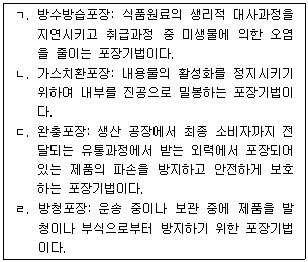
- ㄱ, ㄴ
- ㄴ, ㄷ
- ㄷ, ㄹ
- ㄱ, ㄴ, ㄹ
- ㄱ, ㄷ, ㄹ
(정답률: 44%)
40. 화물의 취급표시(화인) 방법에 관한 설명으로 옳지 않은 것은?
- 스탬핑(Stamping): 고무인이나 프레스기를 사용하여 찍는 방법으로 종이상자, 골판지상자에 적용된다.
- 태그(Tag): 종이, 플라스틱판에 표시내용을 기재한 후 철사, 끈으로 매다는 방법이다.
- 스텐실(Stencil): 시트에 문자를 파두었다가 붓, 스프레이로 칠하는 방법으로 나무상자, 드럼에 적용된다.
- 레이블링(Labeling): 종이나 직포에 필요한 내용을 미리 인쇄해 두었다가 일정한 위치에 붙이는 것으로 통조림, 유리병에 적용된다.
- 스티커(Sticker): 금속제품에 사용하는 방법으로 주물을 주입할 때 미리 화인을 해 두어 완성 시 화인이 나타나도록 하는 방법이다.
(정답률: 72%)
2과목: 물류관련법규
41. 「물류정책기본법」상 청문을 실시하여야 하는 처분으로 옳지 않은 것은?
- 물류관리사 자격의 취소
- 인증우수물류기업에 대한 인증의 취소
- 국제물류주선업자에 대한 사업의 전부 정지
- 지정심사대행기관의 지정취소
- 우수녹색물류실천기업의 지정취소
(정답률: 51%)
42. 「물류정책기본법」상 국가물류정책위원회의 분과위원회로 규정되어 있는 것을 모두 고른 것은?
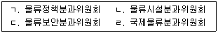
- ㄱ, ㄴ, ㄷ
- ㄱ, ㄴ, ㄹ
- ㄱ, ㄷ, ㄹ
- ㄴ, ㄷ, ㄹ
- ㄱ, ㄴ, ㄷ, ㄹ
(정답률: 49%)
43. A도지사가 국제물류주선업자 甲에게 물류정책기본법령에 따른 과징금을 부과하는 경우에 관한 설명으로 옳지 않은 것은?
- A도지사는 甲에게 사업의 취소를 명하여야 하는 경우로서 그 사업의 취소가 해당 사업의 이용자 등에게 심한 불편을 주는 경우에는 그 사업취소 처분을 갈음하여 과징금을 부과할 수 있다.
- A도지사는 과징금의 금액을 정함에 있어서 甲의 사업규모를 고려할 수 있다.
- A도지사는 과징금의 금액을 정함에 있어서 甲의 위반행위의 정도 및 횟수를 고려할 수 있다.
- 甲은 과징금을 분할하여 낼 수 없다.
- 甲에게 부과된 과징금을 기한 내에 납부하지 아니한 때에는 A도지사는 이를 「지방세외수입금의 징수 등에 관한 법률」에 따라 징수한다.
(정답률: 41%)
44. 다음은 「물류정책기본법」의 규정 내용이다. ( )에 들어갈 수 있는 것으로 옳지 않은 것은?
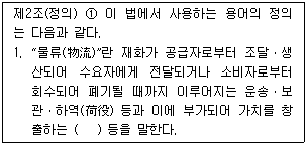
- 분류
- 수리
- 체계
- 상표부착
- 정보통신
(정답률: 48%)
45. 물류정책기본법령상 물류기업이 환경친화적 물류활동을 위하여 행정적ㆍ재정적 지원을 받을 수 있는 활동에 해당하지 않는 것은?
- 환경친화적인 운송수단 또는 포장재료의 사용
- 기존 물류시설ㆍ장비ㆍ운송수단을 환경친화적인 물류시설ㆍ장비ㆍ운송수단으로 변경
- 환경친화적인 물류시스템의 도입 및 개발
- 물류활동에 따른 폐기물 감량
- 물류자원을 절약하고 재활용하는 활동으로서 환경부장관이 정하여 고시하는 사항
(정답률: 50%)
46. 「물류정책기본법」상 물류기업에 대하여 물류정보화에 관련된 프로그램의 개발비용의 일부를 지원할 수 있는 자가 아닌 것은? (단, 권한위임ㆍ위탁에 관한 규정은 고려하지 않음)
- 국토교통부장관
- 해양수산부장관
- 산업통상자원부장관
- 시ㆍ도지사
- 관세청장
(정답률: 53%)
47. 물류정책기본법령상 물류관리사에 관한 설명으로 옳지 않은 것은?
- 물류관리사는 물류활동과 관련하여 전문지식이 필요한 사항에 대하여 계획ㆍ조사ㆍ연구ㆍ진단 및 평가 또는 이에 관한 상담ㆍ자문, 그 밖에 물류관리에 필요한 직무를 수행한다.
- 물류관리사 자격시험은 필기의 방식으로 실시하고, 선택형을 원칙으로 하되 기입형을 가미할 수 있다.
- 물류관리사가 그 자격을 부정한 방법으로 취득한 때에는 국토교통부장관은 그 자격을 취소하여야 한다.
- 물류관리사가 다른 사람에게 자기의 성명을 사용하여 영업을 하게 한 때에는 국토교통부장관은 그 자격을 취소할 수 있다.
- 국토교통부장관은 물류관리사를 고용한 물류관련 사업자에 대하여 다른 사업자보다 우선하여 재정적 지원을 하려는 경우 미리 시ㆍ도지사와 협의하여야 한다.
(정답률: 45%)
48. 물류정책기본법령상 국제물류주선업에 관한 설명으로 옳지 않은 것은?
- 국제물류주선업이란 타인의 수요에 따라 타인의 명의와 계산으로 타인의 물류시설ㆍ장비 등을 이용하여 수출입화물의 물류를 주선하는 사업을 말한다.
- 국제물류주선업을 경영하려는 자는 국토교통부령으로 정하는 바에 따라 시ㆍ도지사에게 등록하여야 한다.
- 국제물류주선업의 등록을 하려는 법인은 3억원 이상의 자본금을 보유하고 그 밖에 대통령령으로 정하는 기준을 충족하여야 한다.
- 법인인 국제물류주선업자가 등록한 사항 중 임원의 성명을 변경하려는 경우에는 국토교통부령으로 정하는 바에 따라 변경등록을 하여야 한다.
- 국제물류주선업자가 다른 사람에게 등록증을 대여한 경우 시ㆍ도지사는 그 등록을 취소하여야 한다.
(정답률: 57%)
49. 물류시설의 개발 및 운영에 관한 법령에 따라 징역형에 처할 수 있는 위반행위는?
- 복합물류터미널사업자가 「물류시설의 개발 및 운영에 관한 법률」에 따른 사업정지명령을 위반하여 그 사업정지 기간 중에 영업을 한 경우
- 국토교통부장관이 복합물류터미널사업자에게 복합물류터미널의 건설에 관하여 필요한 자료의 제출을 명하였으나 이에 응하지 않은 경우
- 시ㆍ도지사가 물류단지개발 시행자에게 물류단지의 개발에 관하여 필요한 보고를 하게 하였으나 거짓으로 보고한 경우
- 복합물류터미널사업자가 타인에게 자기의 상호를 사용하여 사업을 하게 한 경우
- 복합물류터미널사업의 등록에 따른 권리ㆍ의무를 승계한 자가 국토교통부장관에게 승계의 신고를 하지 않은 경우
(정답률: 32%)
50. 물류시설의 개발 및 운영에 관한 법령상 시행자가 물류단지개발사업으로 개발한 토지ㆍ시설 등을 수의계약 방법으로 공급할 수 없는 것은? (단, 그 밖에 관계법령에 따라 수의계약으로 공급할 수 있는 경우는 제외함)
- 학교용지ㆍ공공청사용지 등 일반에게 분양할 수 없는 공공시설용지를 국가, 지방자치단체에 공급하는 경우
- 고시된 물류단지개발실시계획에 따라 존치하는 시설물의 유지ㆍ관리에 필요한 최소한의 토지를 공급하는 경우
- 토지상환채권에 따라 토지를 상환하는 경우
- 「공익사업을 위한 토지 등의 취득 및 보상에 관한 법률」에 따른 협의에 응하여 자신이 소유하는 물류단지의 토지등의 일부를 시행자에게 양도한 자에게 국토교통부령으로 정하는 기준에 따라 토지를 공급하는 경우
- 토지의 규모 및 형상, 입지조건 등에 비추어 토지의 이용가치가 현저히 낮은 토지로서 인접 토지소유자 등에게 공급하는 것이 불가피하다고 인정되는 경우
(정답률: 34%)
51. 물류시설의 개발 및 운영에 관한 법령상 용어에 관한 설명으로 옳지 않은 것은?
- 물류시설에는 화물의 운송과 관련된 가공ㆍ조립ㆍ포장ㆍ판매 등의 활동을 위한 시설도 포함된다.
- 물류터미널사업에는 「항만법」 제2조 제5호의 항만시설 중 항만구역 안에 있는 화물하역시설 및 화물보관ㆍ처리 시설물을 경영하는 사업도 포함된다.
- 「철도사업법」에 따른 철도사업자가 여객의 수하물 또는 소화물을 보관하는 것은 물류창고업에 해당하지 않는다.
- 복합물류터미널사업이란 두 종류 이상의 운송수단 간의 연계운송을 할 수 있는 규모 및 시설을 갖춘 물류터미널사업을 말한다.
- 일반물류단지란 물류단지 중 도시첨단물류단지를 제외한 것을 말한다.
(정답률: 44%)
52. 「국토의 계획 및 이용에 관한 법률」에 따른 개발행위허가의 대상이 아닌 것으로서, 물류시설의 개발 및 운영에 관한 법령상 물류단지 안에서 시장ㆍ군수ㆍ구청장의 허가를 받아야 하는 행위는? (단, 재해복구 또는 재난수습에 필요한 응급조치를 위하여 하는 행위는 제외함)
- 경작지에서의 관상용 죽목의 임시 식재
- 경작을 위한 토지의 형질변경
- 물류단지의 개발에 지장을 주지 아니하고 자연경관을 손상하지 아니하는 범위에서의 토석의 채취
- 물류단지에 존치하기로 결정된 대지 안에서 물건을 쌓아놓는 행위
- 농림수산물의 생산에 직접 이용되는 것으로서 국토교통부령으로 정하는 간이공작물의 설치
(정답률: 39%)
53. 물류시설의 개발 및 운영에 관한 법령상 복합물류터미널 사업의 등록에 관한 설명으로 옳은 것을 모두 고른 것은?
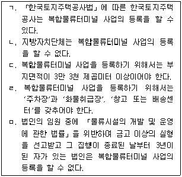
- ㄱ, ㄴ
- ㄱ, ㄷ, ㄹ
- ㄱ, ㄷ, ㅁ
- ㄴ, ㄹ, ㅁ
- ㄷ, ㄹ, ㅁ
(정답률: 66%)
54. 물류시설의 개발 및 운영에 관한 법령상 국가나 지방자치단체가 물류단지개발사업에 필요한 비용의 일부를 보조 또는 융자할 수 있는 종목이 아닌 것은?
- 물류단지의 간선도로의 건설비
- 이주대책사업비
- 물류단지 밖에 설치되는 매연저감시설 설치비
- 문화재 조사비
- 물류단지시설용지와 지원시설용지의 조성비 및 매입비
(정답률: 58%)
55. 물류시설의 개발 및 운영에 관한 법령상 물류단지 개발 및 운영에 관한 설명으로 옳은 것은?
- 100만 제곱미터 이하의 일반물류단지는 국토교통부장관이 지정한다.
- 물류단지지정권자는 물류단지를 지정하려는 때에는 주민 및 관계 전문가의 의견을 들어야 하고 타당하다고 인정하는 때에는 그 의견을 반영하여야 한다. 다만, 국방상 기밀(機密)사항이거나 대통령령으로 정하는 경미한 사항인 경우에는 의견 청취를 생략할 수 있다.
- 물류단지 개발의 효율성을 고려하여 노후화된 일반물류터미널 인근 지역에 도시첨단물류단지를 지정해서는 안 된다.
- 시ㆍ도지사는 도시첨단물류단지를 지정하려면 도시첨단물류단지 예정지역 토지면적의 5분의 4 이상에 해당하는 토지소유자의 동의를 받아야 한다.
- 물류단지개발사업 시행자 중 「지방공기업법」에 따른 지방공사는 사업대상 토지 면적의 3분의 2 이상을 매입하여야만 개발사업에 필요한 토지등을 수용 혹은 사용할 수 있다.
(정답률: 54%)
56. 물류시설의 개발 및 운영에 관한 법령상 “지원시설”에 해당하지 않는 것은?
- 금융ㆍ보험시설
- 의료시설
- 물류단지 종사자의 주거를 위한 공동주택
- 「농업협동조합법」에 따른 조합이 설치하는 구매사업 또는 판매사업 관련 시설
- 입주기업체에서 발생하는 폐기물의 처리를 위한 시설(재활용시설 포함)
(정답률: 46%)
57. 화물자동차 운수사업법령상 화물자동차 운수사업에 관한 설명으로 옳지 않은 것은?
- 화물자동차 운송사업이란 다른 사람의 요구에 응하여 화물자동차를 사용하여 화물을 유상으로 운송하는 사업을 말한다.
- 운수종사자란 화물자동차의 운전자, 화물의 운송 또는 운송주선에 관한 사무를 취급하는 사무원 및 이를 보조하는 보조원, 그 밖에 화물자동차 운수사업에 종사하는 자를 말한다.
- 다른 사람의 요구에 응하여 유상으로 화물운송계약을 중개ㆍ대리하는 사업은 화물자동차 운송주선사업에 해당한다.
- 다른 사람의 요구에 응하여 화물자동차 운송가맹사업을 경영하는 자의 화물 운송수단을 이용하여 자기 명의와 계산으로 화물을 운송하는 사업은 화물자동차 운송가맹사업에 해당한다.
- 화물자동차 운수사업이란 화물자동차 운송사업, 화물자동차 운송주선사업 및 화물자동차 운송가맹사업을 말한다.
(정답률: 58%)
58. 화물자동차 운수사업법령상 화물자동차 운송사업의 허가 등에 관한 설명으로 옳은 것은?
- 화물자동차 운송사업에 대한 허가를 받은 자가 상호를 변경하는 경우에는 추가적으로 국토교통부장관에게 허가를 받아야 한다.
- 화물자동차 운송사업의 허가를 받은 자가 화물자동차 운송가맹사업을 경영하고자 하는 경우 별도로 국토교통부장관의 운송가맹사업 허가를 받을 필요가 없다.
- 운송사업자는 그의 주사무소가 광역시에 있는 경우 그 광역시와 맞닿은 도에 있는 공동차고지를 차고지로 이용하더라도 그 광역시에 차고지를 설치하여야 한다.
- 운송사업자가 주사무소를 관할 관청의 행정구역 외로 이전하는 경우에는 국토교통부장관에게 신고하여야 한다.
- 운송사업자가 화물운송 종사자격이 없는 자에게 화물을 운송하게 하였다는 이유로 국토교통부장관으로부터 감차(減車) 조치 명령을 받은 후 1년이 지나지 아니한 경우에는 증차를 수반하는 허가사항을 변경할 수 없다.
(정답률: 42%)
59. 「화물자동차 운수사업법」상 화물자동차 운송사업의 상속, 양도ㆍ양수 등에 관한 설명으로 옳은 것은?
- 화물자동차 운송사업을 양도ㆍ양수하는 경우 양수인은 국토교통부장관으로부터 허가를 얻어야 한다.
- 운송사업자인 법인이 운송사업자가 아닌 법인을 흡수 합병하는 경우 합병으로 존속하는 법인은 국토교통부장관에게 신고하여야 한다.
- 국토교통부장관은 화물자동차의 지역 간 수급균형과 화물운송시장의 안정과 질서유지를 위하여 국토교통부령으로 정하는 바에 따라 화물자동차 운송사업의 양도ㆍ양수와 합병을 제한할 수 있다.
- 운송사업자가 사망한 경우 상속인이 그 화물자동차 운송사업을 계속하려면 사망한 후 90일 이내에 국토교통부장관으로부터 허가를 얻어야 한다.
- 상속인이 피상속인의 화물자동차 운송사업을 다른 사람에게 양도하기 위해서는 상속인이 국토교통부장관으로부터 허가를 얻어야 한다.
(정답률: 49%)
60. 「화물자동차 운수사업법」상 운송사업자의 운임ㆍ요금, 운송약관에 관하여 ( )에 들어갈 내용으로 옳은 것은?
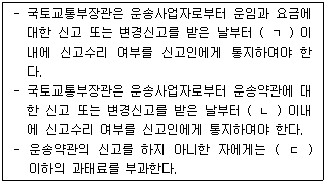
- ㄱ: 14일, ㄴ: 3일, ㄷ: 500만원
- ㄱ: 21일, ㄴ: 3일, ㄷ: 1,000만원
- ㄱ: 14일, ㄴ: 5일, ㄷ: 500만원
- ㄱ: 21일, ㄴ: 5일, ㄷ: 1,000만원
- ㄱ: 30일, ㄴ: 7일, ㄷ: 1,000만원
(정답률: 50%)
61. 「화물자동차 운수사업법」상 운송사업자의 경영의 위ㆍ수탁에 관한 설명으로 옳지 않은 것은?
- 운송사업자는 화물자동차 운송사업의 효율적인 수행을 위하여 필요하면 다른 사람(운송사업자를 제외한 개인을 말한다)에게 차량과 그 경영의 일부를 위탁할 수 있다.
- 운송사업자와 위ㆍ수탁차주는 대등한 입장에서 합의에 따라 공정하게 위ㆍ수탁계약을 체결하여야 한다.
- 위ㆍ수탁계약을 체결하는 경우 위ㆍ수탁계약의 기간은 2년 이상으로 하여야 한다.
- 화물운송사업분쟁조정협의회는 위ㆍ수탁계약의 체결ㆍ이행으로 발생하는 분쟁의 해결을 지원하는 조직이다.
- 위ㆍ수탁계약의 내용이 계약불이행에 따른 당사자의 손해배상책임을 과도하게 가중하여 정함으로써 상대방의 정당한 이익을 침해한 경우에는 그 위ㆍ수탁계약은 전부 무효로 한다.
(정답률: 46%)
62. 화물자동차 운수사업법령상 적재물배상보험등에 관한 설명으로 옳은 것은?
- 운송가맹사업자와 이사화물을 취급하는 운송주선사업자는 적재물배상보험등에 가입하여야 한다.
- 적재물배상보험등에 가입하려는 자는 각 사업자 당 3천만원 이상의 금액을 지급할 책임을 지는 적재물배상보험등에 가입하여야 한다.
- 보험등 의무가입자 및 보험회사등은 화물자동차 운송사업의 허가사항 중 차량대수의 변경(증차)이 있는 경우에도 책임보험계약등의 전부 또는 일부를 해제할 수 있다.
- 보험회사등이 파산 등의 사유로 영업을 계속할 수 없는 경우 보험회사등은 책임보험계약등의 전부를 해제하거나 해지하여서는 아니 된다.
- 보험등 의무가입자인 운송사업자의 화물자동차 운전자가 그 운송사업자의 사업용 화물자동차를 운전하여 과거 2년 동안 「도로교통법」 제44조 제1항에 따른 술에 취한 상태에서의 운전금지를 4회 위반한 경력이 있는 경우에는 보험회사등은 계약의 체결 및 공동인수를 거부할 수 있다.
(정답률: 52%)
63. 「화물자동차 운수사업법」상 운송주선사업자에 관한 설명으로 옳은 것을 모두 고른 것은?
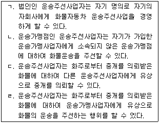
- ㄱ, ㄴ
- ㄱ, ㄷ
- ㄴ, ㄷ
- ㄴ, ㄹ
- ㄷ, ㄹ
(정답률: 45%)
64. 화물자동차 운수사업법령상 운송사업자의 직접운송의무 등에 관한 설명으로 옳지 않은 것은?
- 소유 대수가 2대 이상인 일반화물자동차 운송사업자가 운송주선사업을 동시에 영위하지 않는 경우, 그 운송사업자는 연간 운송계약 화물의 100분의 50 이상을 해당 운송사업자에게 소속된 차량으로 직접 운송하여야 한다.
- 소유 대수가 2대 이상인 일반화물자동차 운송사업자가 운송주선사업을 동시에 영위하는 경우, 그 운송사업자는 연간 운송계약 및 운송주선계약 화물의 100분의 30 이상을 직접 운송하여야 한다.
- 운송가맹사업자로부터 화물운송을 위탁받은 운송가맹점인 운송사업자는 해당 운송사업자에게 소속되지 않은 차량으로만 화물을 운송하여야 한다.
- 운송사업자는 직접 운송하는 화물 이외의 화물에 대하여 다른 운송사업자 또는 다른 운송사업자에게 소속된 위ㆍ수탁차주 외의 자에게 운송을 위탁하여서는 아니 된다.
- 운송사업자가 국토교통부령으로 정하는 바에 따라 운송가맹사업자의 화물정보망을 이용하여 운송을 위탁하면 직접 운송한 것으로 본다.
(정답률: 52%)
65. 화물자동차 운수사업법령상 권한의 (재)위임ㆍ위탁이 허용되지 않는 경우는?
- 국토교통부장관이 화물자동차 운송사업의 허가에 관한 권한의 일부를 시ㆍ도지사에게 위임하는 경우
- 시ㆍ도지사가 국토교통부장관으로부터 위임받은 권한의 일부를 국토교통부장관의 승인을 받아 시장ㆍ군수 또는 구청장에게 재위임하는 경우
- 국토교통부장관이 화물자동차 운송사업의 임시허가에 관한 권한의 일부를 운송사업자로 구성된 협회에 위탁하는 경우
- 국토교통부장관이 화물운송 종사자격증의 발급에 관한 권한의 일부를 「교통안전공단법」에 따른 교통안전공단에 위탁하는 경우
- 국토교통부장관이 화물자동차 운전자의 인명사상사고 및 교통법규 위반사항 제공에 관한 권한의 일부를 「교통안전공단법」에 따른 교통안전공단에 위탁하는 경우
(정답률: 34%)
66. 화물자동차 운수사업법령상 자가용 화물자동차의 사용에 관한 설명으로 옳은 것은?
- 자가용 화물자동차를 국토교통부령으로 정하는 특수자동차로 사용하려는 자는 시ㆍ도지사의 허가를 받아야 한다.
- 시ㆍ도지사는 자가용 화물자동차의 사용에 관한 허가 신청을 받은 날부터 10일 이내에 허가 여부를 신청인에게 통지하여야 한다.
- 자가용 화물자동차의 소유자는 천재지변으로 인하여 수송력 공급을 긴급히 증가시킬 필요가 있는 경우에는 시ㆍ도지사의 허가를 받지 아니하여도 자가용 화물자동차를 유상으로 화물운송용으로 제공할 수 있다.
- 자가용 화물자동차의 소유자가 시ㆍ도지사의 허가를 받지 아니하고 자가용 화물자동차를 유상으로 임대한 경우, 시ㆍ도지사는 12개월 이내의 기간을 정하여 그 자동차의 사용을 제한하여야 한다.
- 시ㆍ도지사는 영농조합법인의 신청에 의하여 자가용 화물자동차에 대한 유상운송 허가기간의 연장을 허가할 수 있다.
(정답률: 43%)
67. 「항만운송사업법」상 검수사등의 자격취득에 관한 결격사유가 있는 사람으로 옳지 않은 것은?
- 미성년자
- 「관세법」에 따른 죄를 범하여 금고 이상의 형의 선고를 받고 그 집행이 면제된 날부터 3년이 지나지 아니한 사람
- 「항만운송사업법」에 따른 죄를 범하여 금고 이상의 형의 집행유예를 선고받고 그 유예기간 중에 있는 사람
- 파산선고를 받은 사람
- 검수사등의 자격이 취소된 날부터 2년이 지나지 아니한 사람
(정답률: 34%)
68. 항만운송사업법령상의 “항만운송”에 해당하지 않는 것은?
- 선박에서 발생하는 폐기물의 운송
- 항만에서 목재를 뗏목으로 편성하여 운송하는 행위
- 선적화물을 내릴 때 그 화물의 중량을 계산하는 일
- 선적화물에 관련된 조사를 하는 일
- 선적화물을 내릴 때 그 화물의 인수를 증명하는 일
(정답률: 50%)
69. 항만운송사업법령상 청문을 하여야 하는 경우로 옳은 것은?
- 항만운송사업자가 사업정지명령을 위반하여 그 정지기간에 사업을 계속한 것을 이유로 해양수산부장관이 항만운송사업의 등록을 취소하는 경우
- 검수사등이 사망하여 그 등록을 말소하는 경우
- 과태료를 부과하는 경우
- 항만운송관련사업자가 대통령령으로 정하는 부득이한 사유로 등록을 하지 아니한 항만에서 일시적으로 영업행위를 하려고 신고한 것에 대하여 그 신고확인증을 발급하는 경우
- 검수사등의 자격증을 발급하는 경우
(정답률: 61%)
70. 유통산업발전법령상 유통산업발전기본계획 및 유통산업발전시행계획에 관한 설명으로 옳은 것은? (단, 권한위임ㆍ위탁에 관한 규정은 고려하지 않음)
- 산업통상자원부장관은 유통산업발전기본계획을 시ㆍ도지사와 시장ㆍ군수ㆍ구청장에게 알려야 한다.
- 산업통상자원부장관은 유통산업발전기본계획에 따라 5년마다 유통산업발전시행계획을 세워야 한다.
- 산업통상자원부장관은 유통산업발전시행계획을 세울 때 관계 중앙행정기관의 장과 협의를 거칠 필요가 없다.
- 시장ㆍ군수ㆍ구청장은 유통산업발전기본계획 및 유통산업발전시행계획에 따라 지역별 유통산업발전시행계획을 세우고 시행하여야 한다.
- 관계 중앙행정기관의 장은 유통산업발전시행계획의 집행실적을 다음 연도 2월 말일까지 산업통상자원부장관에게 제출하여야 한다.
(정답률: 26%)
71. 유통산업발전법령상 유통업상생발전협의회에 관한 설명으로 옳은 것은?
- 유통업상생발전협의회의 구성 및 운영 등에 필요한 사항은 해당 지방자치단체의 조례로 정한다.
- 유통업상생발전협의회 회장은 특별자치시장ㆍ시장ㆍ군수ㆍ구청장이 된다.
- 유통업상생발전협의회 위원은 특별자치시장ㆍ시장ㆍ군수ㆍ구청장이 임명하거나 위촉한다.
- 유통업상생발전협의회의 회의는 재적위원 2분의 1 이상의 출석으로 개의하고, 출석위원 2분의 1 이상의 찬성으로 의결한다.
- 특별자치시장ㆍ시장ㆍ군수ㆍ구청장은 유통업상생발전협의회 위원이 금고 이상의 형을 선고받은 경우에는 해당 위원을 해촉하여야 한다.
(정답률: 24%)
72. 유통산업발전법령상 공동집배송센터의 지정에 관한 설명으로 옳지 않은 것은? (단, 권한위임ㆍ위탁에 관한 규정은 고려하지 않음)
- 공동집배송센터의 지정을 받으려는 자는 산업통상자원부령으로 정하는 바에 따라 공동집배송센터의 조성ㆍ운영에 관한 사업계획을 첨부하여 시ㆍ도지사에게 공동집배송센터 지정 추천을 신청하여야 한다.
- 지정받은 공동집배송센터를 조성ㆍ운영하려는 자가 지정받은 사항 중 산업통상자원부령으로 정하는 중요 사항을 변경하려는 경우에는 공동집배송변경지정신청서를 시ㆍ도지사에게 제출하여야 한다.
- 산업통상자원부장관은 공동집배송센터의 조성을 위하여 필요하다고 인정하는 경우에는 부지의 확보, 도시ㆍ군계획의 변경 또는 도시ㆍ군계획시설의 설치 등에 관하여 시ㆍ도지사에게 협조를 요청할 수 있다.
- 산업통상자원부장관은 공동집배송센터를 지정하였을 때에는 산업통상자원부령으로 정하는 바에 따라 고시하여야 한다.
- 산업통상자원부장관은 거짓이나 그 밖의 부정한 방법으로 공동집배송센터의 지정을 받은 경우에는 공동집배송센터의 지정을 취소하여야 한다.
(정답률: 47%)
73. 유통산업발전법령상 분쟁 조정에 관한 설명으로 옳지 않은 것은?
- 유통분쟁조정위원회는 유통분쟁조정신청을 받은 경우 신청일부터 3일 이내에 신청인외의 관련 당사자에게 분쟁의 조정신청에 관한 사실과 그 내용을 통보하여야 한다.
- 유통분쟁조정위원회가 작성한 조정안을 제시받은 당사자 및 이해관계인은 그 제시를 받은 날로부터 30일 이내에 그 수락 여부를 유통분쟁조정위원회에 통보하여야 한다.
- 유통분쟁조정위원회의 위원 중 해당 지방자치단체의 장이 위촉한 소비자단체의 대표의 임기는 2년으로 한다.
- 유통분쟁조정위원회는 분쟁의 성질상 위원회에서 조정함이 적합하지 아니하다고 인정하는 경우에는 조정을 거부할 수 있다.
- 유통분쟁조정위원회는 동일한 시기에 동일한 사안에 대하여 다수의 분쟁조정이 신청된 경우에는 그 다수의 분쟁조정신청을 통합하여 조정할 수 있다.
(정답률: 46%)
74. 「유통산업발전법」상 중소유통공동도매물류센터에 대한 지원에 관한 설명으로 ( ) 안에 들어갈 수 있는 것을 바르게 나열한 것은? (단, 권한위임에 관한 규정은 고려하지 않음)
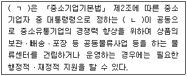
- ㄱ: 기획재정부장관, ㄴ: 소매업자 30인
- ㄱ: 산업통상자원부장관, ㄴ: 소매업자 40인
- ㄱ: 지방자치단체의 장, ㄴ: 소매업자 50인
- ㄱ: 중소기업청장, ㄴ: 도매업자 5인
- ㄱ: 기획재정부장관, ㄴ: 도매업자 10인
(정답률: 40%)
75. 「철도사업법」상 철도사업의 면허취득에 관한 결격사유가 있는 법인으로 옳지 않은 것은?
- 법인의 임원 중에 피한정후견인이 있는 법인
- 법인의 임원 중에 「철도사업법」을 위반하여 금고 이상의 실형을 선고받고 그 집행이 끝나거나(끝난 것으로 보는 경우를 포함한다) 면제된 날부터 2년이 지나지 아니한 사람이 있는 법인
- 법인의 임원 중에 파산선고를 받고 복권되지 아니한 사람이 있는 법인
- 법인의 임원 중에 「철도사업법」을 위반하여 금고 이상의 형의 집행유예를 선고받고 그 유예 기간 중에 있는 사람이 있는 법인
- 「철도사업법」에 따라 철도사업의 면허가 취소된 후 그 취소일부터 2년이 지난 법인
(정답률: 60%)
76. 「철도사업법」상 철도사업자의 '철도화물 운송에 관한 책임'에 대한 설명으로 옳지 않은 것은?
- 철도사업자의 화물의 멸실ㆍ훼손 또는 인도의 지연에 대한 손해배상책임에 관하여는 「상법」 제135조를 준용한다.
- 철도사업자가 화물의 인도에 관한 주의를 게을리하여 화물이 멸실된 경우에 철도사업자는 그에 대한 손해를 배상할 책임이 있다.
- 철도사업자가 화물의 수령에 관한 주의를 게을리하여 화물이 훼손된 경우에 철도사업자는 그에 대한 손해를 배상할 책임이 있다.
- 철도사업자의 사용인이 화물의 보관에 관한 주의를 게을리하여 화물이 훼손된 경우에 철도사업자는 그에 대한 손해를 배상할 책임이 없다.
- 철도사업자의 손해배상책임에 관한 규정을 적용할 때에 화물이 인도 기한을 지난 후 3개월 이내에 인도되지 아니한 경우에는 그 화물은 멸실된 것으로 본다.
(정답률: 52%)
77. 「철도사업법」상 철도사업자의 준수사항으로 옳지 않은 것은?
- 철도사업자는 「철도안전법」 제21조에 따른 요건을 갖추지 아니한 사람을 운전업무에 종사하게 하여서는 아니 된다.
- 철도사업자는 여객 또는 화물 운송에 부수(附隨)하여 우편물과 신문 등을 운송하여서는 아니 된다.
- 철도사업자는 사업계획을 성실하게 이행하여야 한다.
- 철도사업자는 여객 운임표, 여객 요금표, 감면 사항 및 철도사업약관을 인터넷 홈페이지에 게시하고 관계 역ㆍ영업소 및 사업소 등에 갖추어 두어야 하며, 이용자가 요구하는 경우에는 제시하여야 한다.
- 철도사업자는 부당한 운송 조건을 제시하거나 정당한 사유 없이 운송계약의 체결을 거부하는 등 철도운송 질서를 해치는 행위를 하여서는 아니 된다.
(정답률: 65%)
78. 「철도사업법」상 철도서비스 향상 등에 관한 설명으로 옳지 않은 것은?
- 국토교통부장관은 공정거래위원회와 협의하여 철도사업자 간 경쟁을 제한하지 아니하는 범위에서 철도서비스의 질적 향상을 촉진하기 위하여 우수 철도서비스에 대한 인증을 할 수 있다.
- 철도사업자는 철도사업 외의 사업을 경영하는 경우에는 철도사업에 관한 회계와 철도사업 외의 사업에 관한 회계를 구분하여 경리하여야 한다.
- 국토교통부장관으로부터 우수 철도서비스에 대한 인증을 받은 자가 아니면 우수서비스마크 또는 이와 유사한 표지를 철도차량, 역 시설 또는 철도 용품 등에 붙이거나 인증 사실을 홍보하여서는 아니 된다.
- 국토교통부장관은 「철도사업법」에 따른 철도서비스의 품질을 평가하였더라도 그 평가 결과를 신문 등 대중매체를 통하여 공표해야 하는 것은 아니다.
- 국토교통부장관은 공공복리의 증진과 철도서비스 이용자의 권익보호를 위하여 철도사업자가 제공하는 철도서비스에 대하여 적정한 철도서비스 기준을 정하고, 그에 따라 철도사업자가 제공하는 철도서비스의 품질을 평가하여야 한다.
(정답률: 52%)
79. 농수산물 유통 및 가격안정에 관한 법령상 농림축산식품부장관이 농산물의 비축사업 또는 출하조절사업을 위탁할 수 있는 자를 모두 고른 것은?
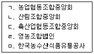
- ㄱ, ㄴ, ㄷ
- ㄱ, ㄴ, ㅁ
- ㄱ, ㄹ, ㅁ
- ㄴ, ㄷ, ㄹ
- ㄷ, ㄹ, ㅁ
(정답률: 26%)
80. 농수산물 유통 및 가격안정에 관한 법령상 유통조절명령에 관한 설명으로 옳은 것은?
- 농림축산식품부장관 또는 해양수산부장관은 시ㆍ도지사와 협의를 거쳐 일정 기간 동안 일정 지역의 해당 농수산물의 생산자등에게 생산조정 또는 출하조절을 하도록 하는 유통조절명령을 할 수 있다.
- 생산자등 또는 생산자단체가 이해관계인ㆍ유통전문가의 의견수렴 절차를 거치지 않고 유통명령을 요청하려는 경우에는 해당 농수산물의 생산자등의 대표나 해당 생산자단체의 재적회원 2분의 1 이상의 찬성을 받아야 한다.
- 유통조절명령에는 유통조절명령의 이유, 대상 품목, 기간 등은 포함되나, 유통조절명령 위반자에 대한 제재조치는 포함되지 않는다.
- 농림축산식품부장관 또는 해양수산부장관은 유통조절명령 요청자가 유통조절명령을 요청하는 경우에는 유통조절명령 요청서를 관보, 공보, 전국을 보급지역으로 하는 일간신문 중 하나 이상에 공고하여야 한다.
- 농림축산식품부장관 또는 해양수산부장관은 필요하다고 인정하는 경우에는 지방자치단체의 장으로 하여금 유통조절명령 집행업무의 일부를 수행하게 할 수 있다.
(정답률: 11%)